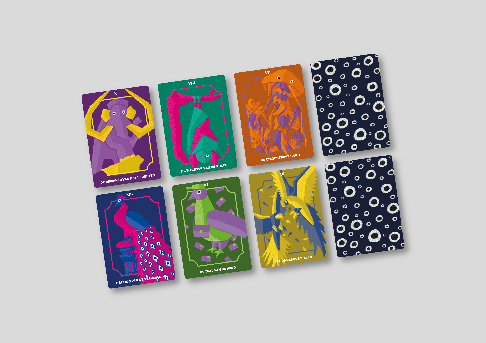

Van de docenten kregen we elk een set tarotkaarten toegewezen. Het was aan ons om een verband te vinden tussen de betekenis van de kaart en het visuele beeld dat zichtbaar is op de kaart.
In deze set kaarten zie je een duidelijke verbinding met het dierenrijk. De betekenis van elke kaart is gekoppeld aan een dier dat de essentie van dat begrip het krachtigst verbeeldt.
Per kaart is gewerkt met twee sterk contrasterende kleuren. Dit maakt elke kaart uniek en laat de illustraties echt uitspringen. Ook heb ik gewerkt met eenvoudige strakke vormen.
De bewaker van het verleden = Mammoet
Met zijn imposante lichaam en lange ivoren slagtanden straalt de uitgestorven mammoet ultieme bescherming en geschiedenis uit.
De wachter van de stilte = Vleermuis
Pas als de nacht valt en het echt stil wordt, ontwaakt de vleermuis om de wacht te houden over de rust van het donker.
De onzichtbare hand = Kwal
Door zijn transparante lichaam is hij nagenoeg onzichtbaar en verrast hij je ongemerkt.
Het oog van de verbeelding = Pauw
Niet letterlijke ogen, maar het opvallende verenkleed vormt een mystiek oogpatroon dat de verbeelding prikkelt.
De taal van de wind = Postduif
Vóór het digitale tijdperk transporteerden zij brieven hoog door de lucht als levende boodschappers van de wind.
De dansende zielen = Vogels
Bekend om hun sierlijke paringsdansen in het voorjaar, waarbij ze hun beste bewegingen en kleuren tonen om indruk te maken.
Achterkant = Ogen
Het terugkerende oog-symbool op elke kaart sluit perfect aan bij de helderziende traditie van tarot.